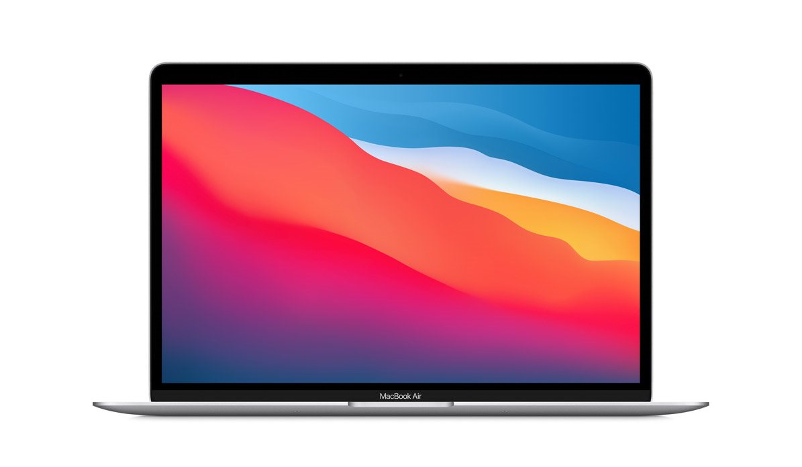

- Macbook Pro 13"
- Macbook Pro 16"
- Macbook Air"
Macbook Air"

Air의 흐름을 바꾸다.
가장 얇고 가벼운 MacBook이 Apple M1 칩으로 완전히 새롭게 탈바꿈했습니다. 최대 3.5배 빨라진 CPU. 최대 5배 빨라진 GPU. 머신 러닝을 전보다 최대 9배 빠른 속도로 구동해주는 최첨단 Neural Engine. MacBook Air 사상 가장 긴 배터리 사용 시간. 그리고 조용한 팬리스 디자인까지. 이토록 놀라운 파워를 이토록 뛰어난 휴대성에 담아 최초로 선보입니다.

M1 칩을 탑재한 Macbook Air 드디어 찾아왔습니다. Mac용으로 Apple에서 직접 디자인한 최초의 칩. 160억 개라는 엄청난 수의 트랜지스터가 집적되어 있는 Apple M1 시스템 온 칩(SoC, System on Chip)은 자그마한 칩 하나에 CPU, GPU, Neural Engine, I/O 등 수많은 요소가 통합되어 있습니다. 놀라운 성능과 맞춤형 테크놀로지, 업계 최고 수준의 전력 효율을 자랑하는1 M1은 Mac의 성능을 단지 한 단계 높이는 것이 아니라 완전히 새로운 경지로 끌어올려주죠.